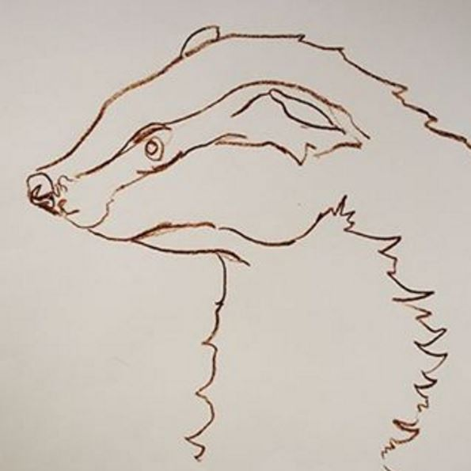
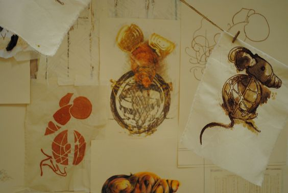
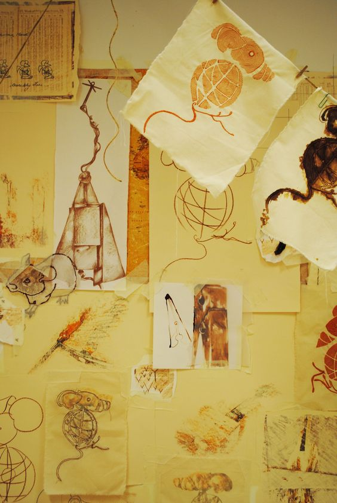
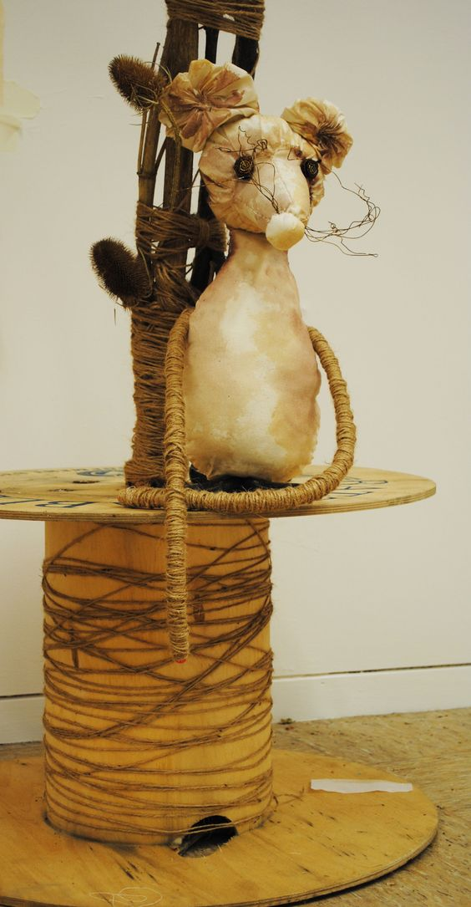
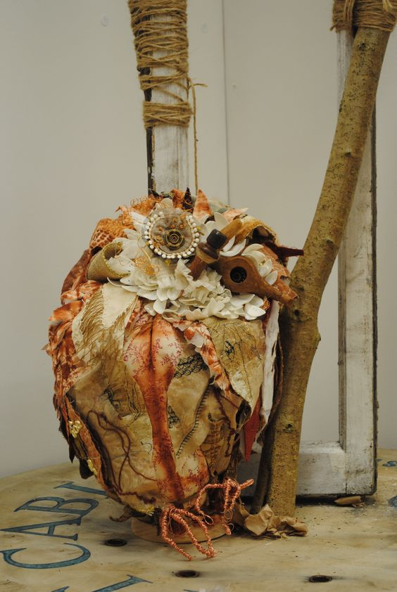

Entitled 'The Maker and the Mice' my Degree Show Exhibition encompassed a range of skills and techniques including illustration, embroidery and sculpture. Grounded in strong drawing skills the show tells the story of a badger craftsman who creates mechanical mice in his workshop.My work is inspired by nature and storytelling. The core of my work is produced through practised observational drawing, further embellished with skills in embroidery and textile illustration.

Preparatory Illustration of a Woodland Badger - 2013

Badger's Workshop Wall with Illustrations and Embroideries of his Mechanical Mice - 2013

Illustrations & Embroideries of Mechanical Mice - 2013

3D Mouse Sculpture Made With Hand Dyed Calico, Wire & Twine - 2013

3D Owl Sculpture Made with Hand Embroidered and Hand Dyed Textiles, Wire & Found Objects - 2013